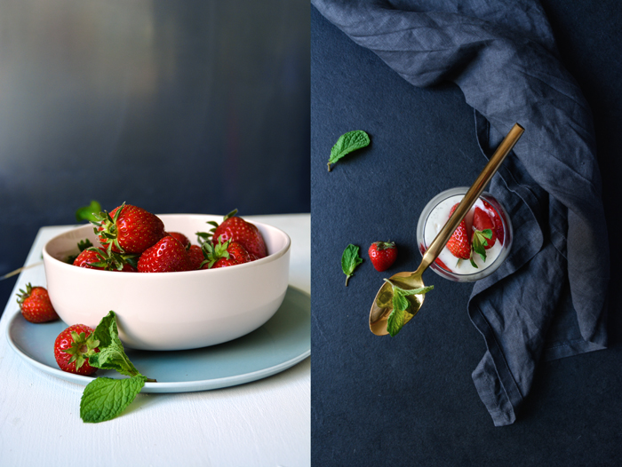

Strawberry
Panna Cotta
Delight in every Bite !
Strawberry
Panna Cotta
Delight in every Bite !
Prep time: 10min | Cook: 5 min | Serves: 4
Add the sheets of gelatine to a bowl of cold water and soak for 5 mins.
Pour the milk and cream into a saucepan with the sugar and vanilla seeds (to scrape the seeds out of the pod, use the back of a knife). Stir to combine and bring to a simmer, then remove from the heat. Take the gelatine out of the cold water and squeeze out the excess, then add to the milk mixture. Stir until completely dissolved. Tip into four ramekins and place in the fridge to set for at least a couple of hours.
To serve, turn each ramekin upside-down onto a serving plate. If the panna cotta won't drop out, carefully dip the ramekin in a bowl of warm water to loosen it. Serve with a drizzle of strawberry compote and sliced fresh strawberries.
Our weekly newsletter provides you with the latest and most delicious recipes.